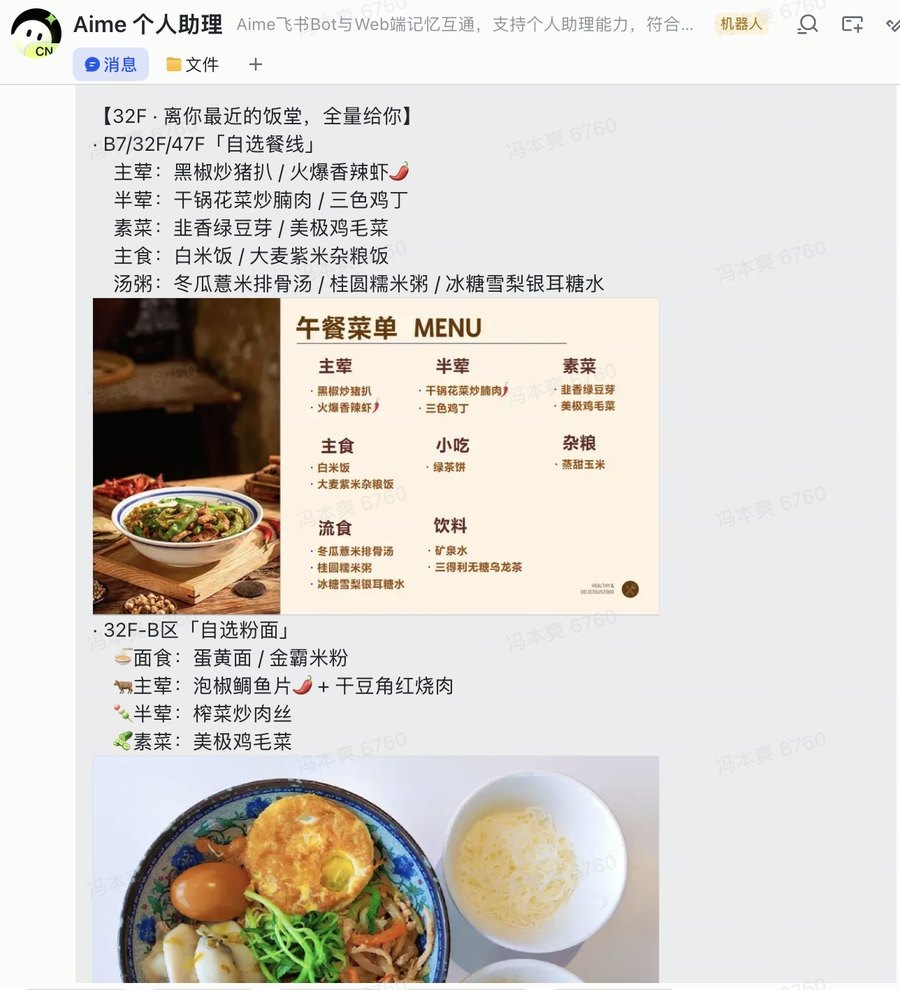
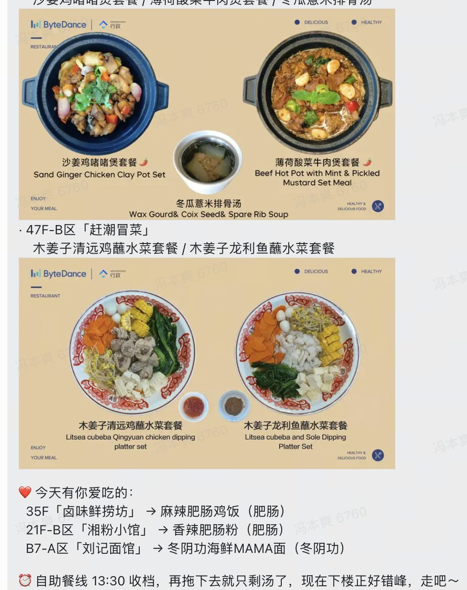
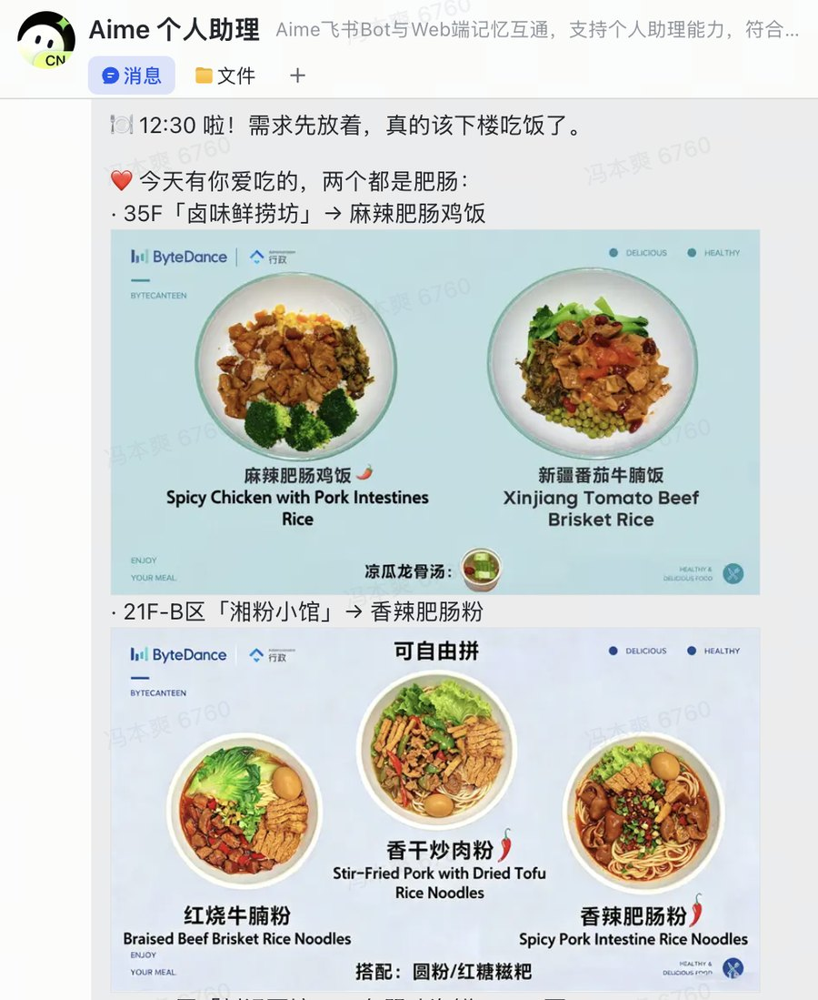
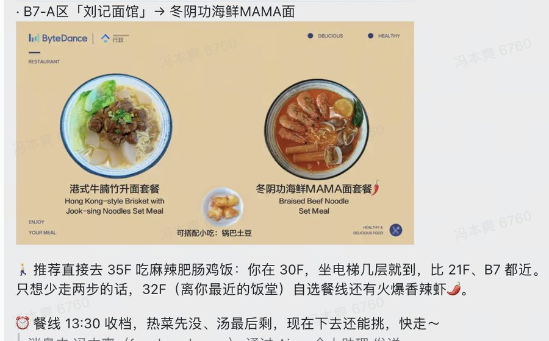

Lunch Radar — 只告诉我值得下楼的那几行。
12:00 开饭，餐饮群 11:55 左右把各楼层菜单刷出来；可我基本没法 12 点就下去。 而一到 12:00，各楼层餐厅开始发排队通知，菜单立刻被刷到上面去了—— 于是每次十二点多想吃饭，我都要在群里往上翻半天找菜单。这就是这个 Skill 要解决的第一件事： 把 11:40–12:10 那个时间窗的菜单替我捞回来，别让我翻。
但它的第一目标其实不是筛信息，而是提醒我按时吃饭。 直接说「该吃饭了」我会顺手划掉，可要是告诉我「12F 今天有美蛙鱼」，我立刻就想起来该下楼了。 所以推送必须口语化、像朋友催你：哪层楼有我爱吃的什么、32F 有什么、哪边排队少、再晚就只剩汤—— 降噪只是让这句催饭话足够具体。
Toggle the rules and watch the noise disappear.
这就是我 12 点多要往上翻的东西：11 张图、七八个楼层，
一到 12:00 全被排队通知刷到上面去。点图片或按 ← → 翻页。
命中清单的菜会在推送里被高亮，并出现在 12:30 的提醒语里——因为「几点吃饭」的决定权， 往往取决于「今天有没有我爱吃的」。清单是唯一需要我手动维护的东西，改一行就生效。
小龙虾是清单里唯一有「越级权限」的菜：它可以打破「其他楼层不看自选」的规则。 这就是我想强调的产品判断——降噪的关键不是砍得干净，而是留对例外。


这两张是飞书里的原始截图，不是效果图。可以对照看它做了四件事：
① 先说人话，再说信息。第一句是「先放下手上的需求，该去吃饭了」—— 它的任务是把我从工位上叫走，不是给我一份菜单报表。
② 文字后面紧跟那张图。每层楼的菜名下面就是这层的菜单原图， 不用先读完全部文字再回头翻九张图找对应关系。
③ 图片菜单被读出来了。群里大部分菜单是图片，它先 OCR 成菜名再参与筛选和高亮， 所以「肥肠」「冬阴功」这种藏在图里的菜也能被拎到最前面。
④ 不知道的不装懂。OCR 没认出来的就写「这张没认出来，已附原图」； 排队长短只画在图里、读不到，就只说「已开餐、这会儿正好错峰」， 不假装自己知道哪层排队少。
数据来源：深圳湾餐饮话题群③ 2026-08-17 11:40–12:10 的真实午餐预告卡（5 张卡 / 20 张菜单图，OCR 成功 17 张）。


12:15 那条是「今天有什么」，12:30 这条只解决一件事：我还没动，现在到底去哪层。 所以它的规则和上一条完全不同：
① 不再重复菜单。只留命中爱吃清单的 1–3 个档口，全文控制在十行内—— 这个时间点我需要的是一个决定，不是一份清单。
② 必须给出一个推荐楼层。今天三处都有肥肠，它按「离我 30F 办公的远近」直接选了 35F， 并顺手给了懒人选项：32F（最近的饭堂）还有火爆香辣虾。
③ 给一个真实的截止时间。「餐线 13:30 收档，热菜先没、汤最后剩」—— 比「快去吃饭」有用得多，这是真正会让我站起来的那句话。
Four rules, written like a spec.
| 优先级 | 条件 | 动作 | 为什么这么设计 |
|---|---|---|---|
| P0 | 楼层 = 32F | 整段保留（含自选、含窗口备注） | 我常在 32 楼，走两步就到，信息越全越好 |
| P1 | 楼层 ≠ 32F 且 类型 = 非自选 / 套餐 / 特色档口 | 保留菜名，最多 6 道，超出折叠 | 值得跨楼层的只有「一整份能吃饱的」 |
| P2 | 楼层 ≠ 32F 且 类型 = 自选 | 默认丢弃；命中「小龙虾 / 龙虾」时保留并加 🦞 标记 | 唯一的越级例外，宁可多发一条也不能漏 |
| P3 | 任意菜名命中爱吃清单 | 高亮 + 进入 12:30 提醒话术 | 把「吃什么」的判断成本压到零 |
12:15 未找到当天预告 → 不推空消息，改为 12:30 直接发爱吃菜品的通用提醒，并附一句「今天群里还没发」。
解析不到楼层/类型时降级为「原文转发 + 高亮关键词」，绝不因为解析失败而静默丢消息。
12:30 提醒前先看当天日程与在线状态，非工作日与休假日自动跳过，避免变成骚扰。
同一天同一时段只发一次，用当天日期做幂等键，任务重跑不会连发两张卡。
Skill definition plus two cron triggers.
不看「最新一条」——因为 12:00 后的排队通知早把菜单刷走了。按 11:40–12:10 时间窗回捞当天全部菜单消息，再顺手收下排队通知。
把整段文本拆成「楼层 → 类型 → 菜名」三层结构，识别自选 / 非自选 / 套餐等关键词。
套用 P0–P3 四条规则，命中爱吃清单的菜名加高亮，小龙虾单独打标。
过滤结果私聊发给我；12:30 复用同一份结果生成口语化催饭话术：哪层楼有你爱吃的什么、哪边排队少、再晚就只剩汤。
它是话题群，每天 11:32–11:59 由餐厅客服分楼层发多张卡片。所以定位方式不是「找最新一条」，而是按当天时间窗口捞主流里的全部预告。
它混在「B7/32/47 餐厅-午餐预告」这一张卡里。这条发现直接改了实现方式：楼层判断必须下沉到段落级（如 32F-B区-「自选粉面」），按卡片分类会全错。
自选餐线 / 自选粉面 / 轻食自助。规则里写死一个词就会漏，所以按关键词族匹配，而不是全等判断。
群里 12:50 后会发纯文本的售罄通知（如「47F 蒜香骨已售罄」）。句式稳定、可解析——但它比 12:30 晚，所以按时段过滤，只在更晚的提醒里引用，不能拿来编造 12:30 的现场情况。
21F、A7 的菜单是纯图。这种情况下我选择标注「图片菜单，见原文」，而不是断言「今天没有你爱吃的」——宁可承认看不见，也不给假结论。
中午 12:15 我不会主动打开任何网页，信息必须来找我。做成 Agent Skill 的好处是： 触发时机、数据源、消息通道全在同一条链路里，规则改一行就能生效，不需要发版。
这也是我在字节做回传自动化 Agent 时的同一套思路：先找到「人反复做同一个判断」的地方， 把判断写成规则 + 例外，再交给系统在正确的时刻执行。
下一步：让它记录我实际去了哪层楼，一周后反推「哪些菜真的会让我下楼」，把爱吃清单从手写变成学习出来的。
Skill 本体是一个可直接安装的目录：一份 SKILL.md（催饭规则、楼层过滤、图文排版规范）加几个脚本（回捞群消息、下载菜单图、OCR、私聊推送）。 改掉「爱吃清单」和群 ID，就是你自己的那份提醒。
安装：解压后放进 user_skills/lunch-radar，设置工作日 12:15 的定时任务即可。